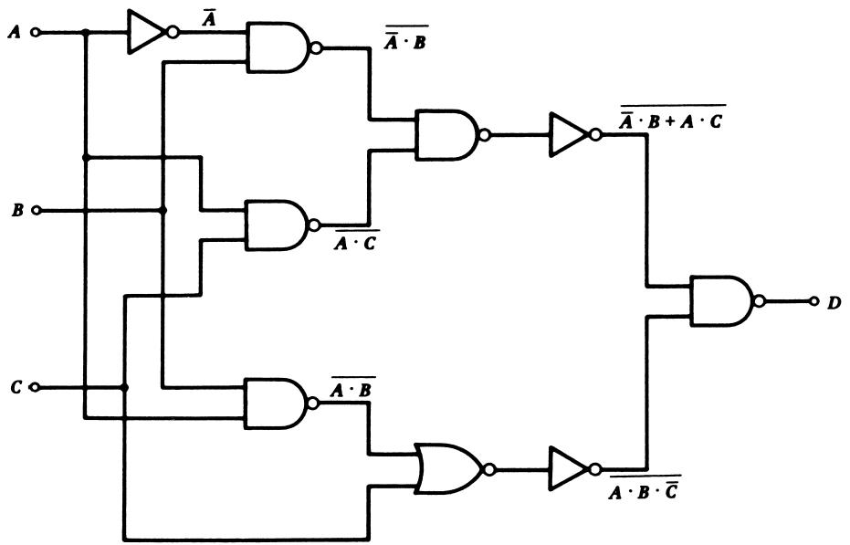
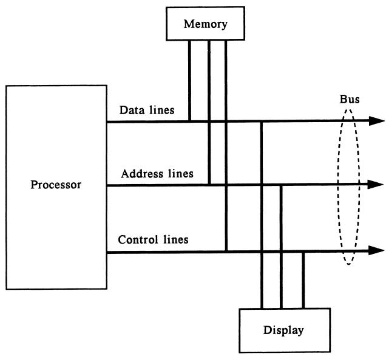
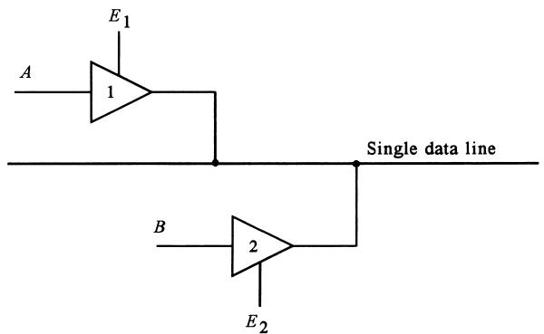

Digital Signal Conditioning & Digital Fundamentals
Instruments 3.1
Imron Rosyadi
Learning Objectives
By the end of this session, you should be able to:
- Explain what digital signal conditioning is and why it is essential in modern instrumentation and control.
- Describe how analog process variables (e.g., temperature, level, pressure) are represented in digital form.
- Convert between binary, decimal, octal, and hexadecimal representations (including fractional values).
- Interpret and construct simple Boolean expressions from process-control requirements.
- Map Boolean expressions to basic digital logic (AND/OR and NAND/NOR implementations).
- Describe the role of PLCs and computer interfaces (buses, tri‑state buffers) in digital control systems.
Why Digital Signal Conditioning?
- Modern control and instrumentation heavily use digital electronics and computers.
- Computers, PLCs, and microcontrollers only understand digital data (0s and 1s).
- Most real-world signals (temperature, pressure, flow, position, etc.) are analog.
- Digital signal conditioning: the set of techniques used to transform analog process signals into a digital format that computers can use reliably.
Note
In instrumentation, “signal conditioning” means any processing (filtering, scaling, amplification, linearization, conversion) that makes a raw sensor signal usable by the rest of the system. Digital signal conditioning is specifically about representing and processing that information using binary digital electronics.
Everyday Digital Control – ECE Context
Examples around you:
- Automatic door openers in stores
- Motion sensors in home security
- Seat-belt warning systems in cars
- Microwave oven controllers
- Washing machines with programmable cycles
- Engine control units (ECUs) in cars
All of these:
- Sense analog quantities (motion, position, temperature, pressure, etc.)
- Convert them to digital data
- Make decisions using digital logic or software
- Drive actuators based on digital decisions
Why Use Digital Techniques in Control?
Digital representation typically does not increase raw sensor accuracy. In fact, quantization and conversion can lose some resolution.
So why go digital?
- Noise Immunity
- Digital 0/1 levels are tolerant to moderate noise, power supply drift, and gain changes.
- Complex Logic & Computation
- Implement complex control laws, filters, and optimization with software.
- Multivariable Control
- One computer/PLC can coordinate many process variables at once.
- Nonlinearity Compensation
- Sensors with nonlinear characteristics can be linearized in software.
- Networking & Integration
- Digital networks (Ethernet, fieldbus, etc.) connect multiple control units into integrated plants.
Tip
From an instrumentation engineer’s perspective, going digital is about robustness, flexibility, and scalability, not about creating “perfect” data.
What Is Digital Signal Conditioning (in this course)?
In process control, digital signal conditioning means:
- Representing analog process information (e.g., temperature, pressure, level) as digital words.
- Applying digital logic and/or software to that information:
- Decisions (alarms, interlocks)
- Control actions (on/off, PID, multi-step sequences)
- Linearization, scaling, filtering
It involves:
- Understanding binary / number systems.
- Using Boolean algebra to describe logic.
- Implementing logic in digital hardware (gates, PLCs) or software (microcontrollers, PCs).
- Interfacing sensors and actuators to computer buses safely and correctly.
Digital Fundamentals – Overview
To apply digital techniques in process control, you need:
- Binary representation of information
- Bits, words, integers, fractions
- Non-binary number systems
- Octal and hexadecimal (compact human-readable forms)
- Boolean algebra
- True/false (1/0) logic for expressing conditions and decisions
- Digital logic electronics
- Implementing Boolean equations using AND, OR, NOT, NAND, NOR gates
- Programmable Logic Controllers (PLCs)
- Industrial-grade digital controllers for logic-heavy control tasks
- Computer interfaces & buses
- Data, address, control buses; tri-state buffers for sharing lines
Digital Information: Bits and Levels
Digital information is represented by binary signals:
- Two distinct states (2-level, base-2 system).
- Common physical encodings:
- Two voltages (e.g., 0 V and 5 V)
- Two currents (e.g., 0 mA and 20 mA)
- Two frequencies
- Two phases
On a single digital signal line, we refer to:
- High state: H or logical 1
- Low state: L or logical 0
A single such signal is called a bit (binary digit).
Digital Words – More Than One Bit
A single bit can only represent two states. To represent more complex information (like a measured value), we group bits into a word.
- A word is a sequence of bits: e.g., 4-bit, 6-bit, 8-bit, 16-bit, 32-bit.
- Example 6‑bit word:
101011₂
- Each bit has a weight:
- Least significant bit (LSB) weight = \(2^0\)
- Next bit weight = \(2^1\), then \(2^2\), … up to most significant bit (MSB).
Digital words are used to:
- Encode sensor readings (after ADC conversion).
- Represent internal register values in PLCs and microcontrollers.
- Transmit data on a bus.
Important
An important question whenever you see a digital word:
“How is this word encoded from the underlying physical quantity?” - Straight binary? - Two’s complement? - BCD? - Some custom scaling?
Binary and Decimal – Conceptual Link
Binary is base 2. Decimal is base 10.
In decimal, each digit \(a_i\) multiplies a power of 10:
\[ N_{10} = a_n 10^n + a_{n-1} 10^{n-1} + \dots + a_1 10^1 + a_0 10^0 \]
In binary, each bit \(a_i\) multiplies a power of 2:
\[ N_{10} = a_n 2^n + a_{n-1} 2^{n-1} + \dots + a_1 2^1 + a_0 2^0 \]
Digit values:
- Decimal digits: 0–9
- Binary digits (bits): 0 or 1 only
Example 1 – Binary → Decimal (Whole Number)
Problem: Find the base‑10 equivalent of the binary whole number \(\mathbf{00100111_2}\).
Step 1 – Drop leading zeros:
- \(\mathbf{00100111_2} = \mathbf{100111_2}\)
Step 2 – Label bits and powers of 2:
- Bits: \(a_5 a_4 a_3 a_2 a_1 a_0 = 1 0 0 1 1 1\)
- We use $$ N_{10} = a_5 2^5 + a_4 2^4 + a_3 2^3 + a_2 2^2 + a_1 2^1 + a_0 2^0 ]
Step 3 – Substitute and evaluate:
[ \[\begin{aligned} N_{10} &= (1)2^5 + (0)2^4 + (0)2^3 + (1)2^2 + (1)2^1 + (1)2^0 \\ &= 32 + 0 + 0 + 4 + 2 + 1 \\ &= 39 \end{aligned}\]$$
So, \(\mathbf{00100111_2 = 39_{10}}\).
Tip
A quick mental check: - \(2^5 = 32\) is the largest power used. - The number must be between 32 and \(2^{6} - 1 = 63\). - Our result 39 is plausible.
Example 2 – Decimal → Binary (Whole Number)
Problem: Find the binary equivalent of the decimal number \(47_{10}\).
We use successive division by 2, keeping track of the remainders:
- \(47 / 2 = 23\) with remainder 1 ⇒ \(a_0 = 1\) (LSB)
- \(23 / 2 = 11\) with remainder 1 ⇒ \(a_1 = 1\)
- \(11 / 2 = 5\) with remainder 1 ⇒ \(a_2 = 1\)
- \(5 / 2 = 2\) with remainder 1 ⇒ \(a_3 = 1\)
- \(2 / 2 = 1\) with remainder 0 ⇒ \(a_4 = 0\)
- \(1 / 2 = 0\) with remainder 1 ⇒ \(a_5 = 1\) (MSB)
Now read remainders from last to first:
- \(a_5 a_4 a_3 a_2 a_1 a_0 = 1\ 0\ 1\ 1\ 1\ 1\)
So, \[ 47_{10} = \mathbf{101111_2} \]
Note
Algorithm summary for \(N_{10} \to \text{binary}\):
- Divide by 2.
- Store the remainder (0 or 1).
- Repeat with the quotient until it becomes 0.
- Read bits from last remainder to first remainder.
Quick Interactive Check – Decimal ↔︎ Binary
Students can edit the numbers and run to test their own conversions.
Octal and Hexadecimal – Why Bother?
Working directly with long binary strings is tedious and error-prone.
- Example: \(101101110011_2\) is hard to read.
- But in octal or hex, the same value becomes much shorter.
Grouping rules:
- Octal (base 8): group bits in 3s.
- Hex (base 16): group bits in 4s.
Hex digit values:
- \(0, 1, 2, 3, 4, 5, 6, 7, 8, 9, \mathrm{A}, \mathrm{B}, \mathrm{C}, \mathrm{D}, \mathrm{E}, \mathrm{F}\).
Common in ECE:
- Microcontrollers, PLCs, and memory addresses often shown in hex.
- Some older systems use octal, especially with word sizes multiple of 3 bits (e.g., 12‑bit).
Tip
For 4‑bit, 8‑bit, 16‑bit words, hex is usually the most convenient representation.
Example – Binary ↔︎ Octal
Take binary number \(101011_2\).
- Group into 3-bit chunks from right:
- \(101\ 011_2\)
- Convert each group to octal digit:
- \(101_2 = 5_8\)
- \(011_2 = 3_8\)
So, \[ 101011_2 = 53_8 \]
Example – Binary ↔︎ Hexadecimal
Take binary number \(10110110_2\).
- Group into 4-bit chunks from right:
- \(1011\ 0110_2\)
- Convert each group to hex digit:
- \(1011_2 = 11_{10} = \mathrm{B}\)
- \(0110_2 = 6_{10} = 6\)
So, \[ 10110110_2 = \mathrm{B6H} \]
Note: the suffix H (or h) is often used to indicate a hex number (instead of subscript 16).
Fractional Binary Numbers – Concept
Binary can represent fractions, just like decimal can.
Decimal example:
\[ 0.47_{10} = 4 \times 10^{-1} + 7 \times 10^{-2} \]
Binary fractional example:
\[ N_{10} = b_1 2^{-1} + b_2 2^{-2} + \dots + b_m 2^{-m} \]
where:
- \(N_{10}\) is a decimal number less than 1.
- \(b_1 b_2 \dots b_m\) is the binary number less than 1.
- \(b_i \in \{0, 1\}\).
Bit weights:
- Immediately after the binary point: weight \(2^{-1} = 0.5\).
- Next bit: \(2^{-2} = 0.25\).
- Next: \(2^{-3} = 0.125\), etc.
Note
Fractional binary shows up directly in fixed-point representations and in ADC output scaling.
Example 3 – Fractional Binary → Decimal
Problem: Find the base‑10 equivalent of the binary number \(\mathbf{0.11010_2}\).
Using: \[ N_{10} = b_1 2^{-1} + b_2 2^{-2} + \dots + b_m 2^{-m} \]
Here:
- \(m = 5\)
- Bits: \(b_1 b_2 b_3 b_4 b_5 = 1\ 1\ 0\ 1\ 0\)
Compute:
\[ \begin{aligned} N_{10} &= (1)2^{-1} + (1)2^{-2} + (0)2^{-3} + (1)2^{-4} + (0)2^{-5} \\ &= \frac{1}{2} + \frac{1}{4} + 0 + \frac{1}{16} + 0 \\ &= 0.5 + 0.25 + 0.0625 \\ &= 0.8125_{10} \end{aligned} \]
So, \[ 0.11010_2 = 0.8125_{10} \]
Example 4 – Decimal Fraction → Binary
Problem: Find the binary, octal, and hex equivalents of \(0.3125_{10}\).
Algorithm: successive multiplication by 2.
- \(2 \times 0.3125 = 0.6250\) ⇒ whole part 0 ⇒ \(b_1 = 0\)
- \(2 \times 0.6250 = 1.2500\) ⇒ whole part 1 ⇒ \(b_2 = 1\); new fraction 0.25
- \(2 \times 0.25 = 0.5\) ⇒ whole part 0 ⇒ \(b_3 = 0\)
- \(2 \times 0.5 = 1.0\) ⇒ whole part 1 ⇒ \(b_4 = 1\); fraction 0 → stop
Thus, \[ 0.3125_{10} = 0.0101_2 \]
We can write trailing zeros without changing value:
- \(0.0101_2 = 0.010100_2\).
Now convert to octal (groups of 3 bits):
- \(0.010100_2 = 0.010\ 100_2\).
- \(010_2 = 2_8,\quad 100_2 = 4_8\).
- So \(0.010100_2 = 0.24_8\).
Convert to hex (groups of 4 bits):
- \(0.0101_2 = 0.0101_2\).
- \(0101_2 = 5_{10} = 5_{\mathrm{H}}\).
- So \(0.0101_2 = 0.5\mathrm{H}\).
Tip
Algorithm summary for \(0 < N_{10} < 1\):
- Multiply by 2.
- Record the whole part (0 or 1) as the next binary digit.
- Replace the number with the fractional part.
- Repeat until the fraction becomes 0 or you reach desired number of bits.
Boolean Algebra – Logic for Control
In control systems we often make decisions based on true/false conditions:
- Is the temperature above setpoint?
- Is the tank level low?
- Is the pump running?
- Is the door closed AND the safety interlock engaged?
Boolean algebra provides a mathematical language to:
- Represent each condition as a variable:
- 1 = true, condition satisfied
- 0 = false, condition not satisfied
- Combine conditions using logical operators:
- AND, OR, NOT (and derived forms like NAND, NOR)
- Express control decisions and alarm logic as equations.
Common Boolean operators:
- AND → \(\cdot\)
- OR → \(+\)
- NOT → overbar \(\overline{A}\)
Simple examples:
- “Alarm if temperature high AND pressure high”
- \(D = T \cdot P\)
- “Alarm if level low OR flow low”
- \(D = \overline{L} + \overline{F}\)
Boolean Algebra in a Process Example
Consider a mixing tank with three monitored variables:
- \(A\): level
- \(B\): pressure
- \(C\): temperature
Each is compared to a setpoint and turned into a Boolean variable:
- 1 ⇒ above setpoint (or “high”)
- 0 ⇒ below setpoint (or “low”)
We define an alarm variable \(D\):
- \(D = 1\) ⇒ alarm should sound.
Alarm must trigger when any of these conditions occur:
- Low level with high pressure.
- High level with high temperature.
- High level, low temperature, and high pressure.
We write Boolean expressions for each case:
- Low level = \(\overline{A}\), high pressure = \(B\) ⇒ \(\overline{A} \cdot B\).
- High level = \(A\), high temperature = \(C\) ⇒ \(A \cdot C\).
- High level = \(A\), low temperature = \(\overline{C}\), high pressure = \(B\) ⇒ \(A \cdot \overline{C} \cdot B\).
We OR them together because any condition should cause an alarm:
\[ D = \overline{A} \cdot B + A \cdot C + A \cdot \overline{C} \cdot B \tag{2} \]
Important
Equation (2) is now a precise, compact specification of the alarm logic and directly maps to digital circuitry or PLC ladder logic.
Diagram – Boolean Logic in the Process

Digital Electronics – From Equations to Gates
Boolean equations are implemented in digital hardware using logic gates:
- AND gate: output is 1 if all inputs are 1.
- OR gate: output is 1 if any input is 1.
- NOT (inverter): output is the logical complement.
- NAND gate: NOT(AND) = \(\overline{A \cdot B}\).
- NOR gate: NOT(OR) = \(\overline{A + B}\).
The logic family (TTL, CMOS, etc.) defines:
- Required power supplies.
- Voltage thresholds for “0” and “1”.
But conceptually, gates deal with ideal 0/1 levels.
Note
In practice, instrumentation engineers may not design gates from transistors, but they often choose and connect gate-level ICs, or more commonly today, specify logic for PLCs or firmware.
Example 5 – Implementing Equation (2) with AND/OR Gates
Goal: Implement \[ D = \overline{A} \cdot B + A \cdot C + A \cdot \overline{C} \cdot B \tag{2} \]
using AND, OR, and inverters.
Implementation strategy:
- Generate \(\overline{A}\) and \(\overline{C}\) using inverters.
- Use AND gates for each product term:
- Term 1: \(\overline{A} \cdot B\)
- Term 2: \(A \cdot C\)
- Term 3: \(A \cdot \overline{C} \cdot B\)
- Feed all three AND outputs into a 3-input OR gate to get \(D\).

Observation: logic experts can simplify Eq. (2) to:
\[ D = A \cdot C + B \]
This simpler equation can be implemented by just one AND gate and one OR gate.
Tip
Simplifying Boolean expressions reduces hardware cost and can improve reliability—important for instrumentation hardware.
Example 6 – Implementing with NAND/NOR Logic
Many digital IC families offer NAND and NOR gates as basic building blocks.
Approach 1 (brute force):
- Take the AND/OR implementation from Example 5.
- Replace each AND/OR gate with a NAND/NOR and add inverters to restore function.
- This yields a circuit that “looks like” Figure 2 but with an extra inverter after each gate.
Approach 2 (more elegant):
- Use Boolean theorems (including De Morgan’s) to rewrite Eq. (2) in a form well-suited for NAND/NOR.
One possible reformulation (following the text’s logic):
- If you want \(D\) to be the output of a NAND gate, think of its inputs as \(\overline{(\overline{A} \cdot B)} + \overline{A \cdot C}\) and \(\overline{A \cdot B \cdot \overline{C}}\), and so on, applying De Morgan’s theorem to simplify.
However, if we start from the simplified version from Example 5:
\[ D = A \cdot C + B \]
We can use De Morgan’s theorem:
\[ D = A \cdot C + B = \overline{(A \cdot C)} \cdot \overline{B} \]
This form is more suitable for NAND logic:
- \(\overline{(A \cdot C)}\) is directly the output of a NAND gate driven by \(A\) and \(C\).
- \(\overline{B}\) is the output of a NOT gate (or a 1‑input NAND).
- The final product can again be realized via a NAND + inverters configuration.

Programmable Logic Controllers (PLCs)
PLCs emerged as a digital replacement for relay-based control panels.
Key characteristics:
- Ruggedized for industrial environments (temperature, vibration, EMC).
- Specialty: implementing Boolean logic, sequencing, timing, counting, and simple arithmetic.
- Often programmed using ladder diagrams (graphical, relay-like) or structured text.
- Ideal for binary-logic-heavy control problems: safety interlocks, machine sequencing, start/stop logic, alarms.
Relationship to our topic:
- The Boolean equations we wrote (like Eq. (2)) can be translated almost directly into PLC ladder logic.
- PLCs are a major platform for digital signal conditioning and control in industry.
Note
Think of a PLC as an industrially hardened, specialized logic computer optimized for real-time discrete control.
Computer Interfaces and Buses
A typical digital control/computing system connects a processor to multiple external devices via a bus.

The bus usually consists of:
- Data lines
- Carry data to and from the processor (e.g., sensor readings, commands).
- Address lines
- Select which external device, register, or memory location to talk to.
- Control lines
- Indicate operations like read, write, interrupt, or acknowledge.
Interface: the combination of hardware (buffers, drivers, connectors) and software (device drivers, register maps) that allows sensors/actuators to communicate on the bus.
Important
All devices share the bus, so we must ensure that only one device drives a given line at a time—otherwise we get bus contention and possibly damage hardware.
Tri-State Buffers – Sharing Bus Lines
Problem: If two devices both connect outputs directly to the same data line, and one drives 1 while the other drives 0, you get a short or undefined voltage.
Solution: Use tri-state buffers.
- A tri-state buffer can be in one of three states:
- Drive logic 0.
- Drive logic 1.
- High-impedance (Hi-Z) – effectively disconnected.

In the figure:
- Signals \(A\) and \(B\) both connect to the same data line through tri-state buffers.
- Control signals \(E_1\) and \(E_2\) enable or disable each buffer.
Operation:
- Normally, both tri-state buffers are disabled → outputs in Hi-Z → both “off the bus”.
- When the computer wants to read \(A\):
- It asserts \(E_1\) to enable the first tri-state.
- The state of \(A\) appears on the data line.
- The computer reads the line, then de-asserts \(E_1\).
- When it wants \(B\):
- It asserts \(E_2\) instead.
Note
Tri-state buffers are crucial for building shared buses where multiple devices safely take turns driving the same physical wires.
Interactive Exercise – Simple Bus Arbitration Logic
Let’s conceptually model control logic that ensures only one device drives the bus:
Students can modify this to change priority or add a third request.
Summary – Key Points
- Digital signal conditioning is required because modern control systems (computers, PLCs, microcontrollers) operate on digital data, while process variables are analog.
- Digital representation does not inherently increase accuracy, but it provides:
- Better immunity to noise and drift.
- Flexibility for complex logic, algorithms, and networking.
- Digital information is represented using bits and words in binary.
- Conversion between binary, decimal, octal, and hex is fundamental:
- Whole numbers: successive division by 2 for decimal → binary.
- Fractions: successive multiplication by 2 for decimal fraction → binary.
- Boolean algebra allows us to express control and alarm logic using 1/0 variables and operators (AND, OR, NOT).
- Boolean equations are implemented with digital logic gates (AND/OR, NAND/NOR) or in PLCs and embedded controllers.
- PLCs are industrial digital controllers tailored for Boolean and sequential control—descendants of relay panels.
- Computer buses (data, address, control) connect processors to peripherals, and tri-state buffers ensure safe sharing of bus lines.
Important
Understanding number systems, Boolean algebra, and basic digital logic is essential groundwork for later topics: ADCs/DACs, digital filters, PLC programming, and embedded instrumentation.
Formula & Method Summary
Binary Whole Numbers
General expansion: [ N_{10} = a_n 2^n + a_{n-1} 2^{n-1} + + a_1 2^1 + a_0 2^0 ]
Decimal → Binary (whole number):
- Repeated division by 2, store remainders, read from last to first.
Fractional Binary Numbers
General expansion for \(0 < N_{10} < 1\): [ N_{10} = b_1 2^{-1} + b_2 2^{-2} + + b_m 2^{-m} ]
Decimal fraction → Binary fraction:
- Repeated multiplication by 2; each whole part (0 or 1) is the next bit.
Octal and Hex Conversion
- Binary → Octal: group bits in 3s, convert each group to 0–7.
- Binary → Hex: group bits in 4s, convert each group to 0–9, A–F.
Boolean Algebra Basics
Variables: 1 (true), 0 (false).
Operators:
- AND: \(A \cdot B\).
- OR: \(A + B\).
- NOT: \(\overline{A}\).
Example alarm logic: [ D = B + A C + A B ]
Simplified form (for Example 5): [ D = A C + B ]
De Morgan’s Theorem (for NAND/NOR design)
- \(\overline{A \cdot B} = \overline{A} + \overline{B}\)
- \(\overline{A + B} = \overline{A} \cdot \overline{B}\)
Used to reshape expressions for efficient NAND/NOR implementations.
Practice
- Convert the following to decimal:
- \(11001_2\)
- \(0.1011_2\)
- Convert the following to binary:
- \(29_{10}\)
- \(0.375_{10}\)
- Express \(10111001_2\) in:
- octal
- hex
- For the mixing tank, add a new condition:
- Alarm also if level low AND temperature low.
- Write the new Boolean equation for \(D\).
- Sketch a gate-level implementation (AND/OR/NOT) of your new equation.
Try coding your own conversion helpers in the Pyodide cell earlier to check your answers.